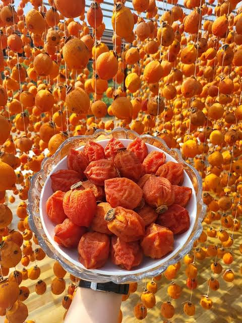
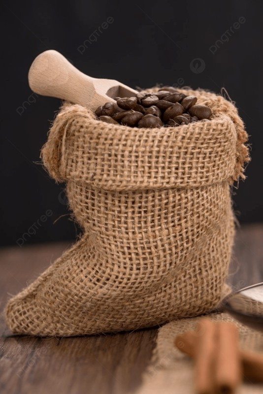

Món Quà Từ Khí Hậu & Thổ Nhưỡng Cao Nguyên Lâm Đồng
Không phải ngẫu nhiên mà trái hồng treo gió Cầu Đất lại dẻo mật thơm lừng, cây Atiso Lạc Dương lại giàu hoạt chất Cynarin quý giá, hay hạt cà phê Arabica lại mang hương hoa trái thanh tao đến vậy. Tất cả nhờ vào biên độ nhiệt ngày đêm đặc trưng, làn sương mù tinh khiết và tầng đất đỏ bazan trù phú của Đà Lạt.
Tại Đặc sản Đà Lạt, mỗi sản phẩm trước khi lên kệ đều phải vượt qua quy trình tuyển chọn khắt khe: Nói không với phẩm màu hóa học, không chất bảo quản độc hại và không trộn hàng kém chất lượng.
Hành Trình 4 Bước Từ Nông Trại Đến Bàn Ăn
Kết hợp bí quyết truyền thống của người nông dân Đà Lạt cùng công nghệ chế biến Nhật Bản & sấy lạnh hiện đại.
Nông sản được hái tay vào sáng sớm khi đạt độ chín và hàm lượng dinh dưỡng cao nhất tại vườn.
Sàng lọc kỹ lưỡng từng trái hồng, bông atiso, hạt mắc ca lành lặn, đồng đều trước khi đưa vào xưởng.
Treo gió nhà kính công nghệ Hoshigaki Nhật Bản & sấy lạnh thăng hoa giữ trọn 98% dưỡng chất tự nhiên.
Hút chân không 2 lớp, đóng hộp chỉn chu, vận chuyển nhanh toàn quốc và hỗ trợ đổi trả trong 7 ngày.
Giá Trị Cốt Lõi Của Chúng Tôi
🌱 Minh bạch Nguồn gốc
100% sản phẩm đều công khai rõ vùng trồng, thành phần, quy trình chế biến và hạn sử dụng mới nhất để khách hàng hoàn toàn an tâm khi thưởng thức hoặc biếu tặng.
🤝 Đồng hành Cùng Nông hộ
Cam kết bao tiêu nông sản sạch với giá công bằng, khuyến khích bà con nông dân Lâm Đồng canh tác theo hướng hữu cơ bền vững và VietGAP.
🎁 Tận tâm Trong Từng Thức Quà
Dù là một gói khoai lang mật sấy dẻo ăn vặt hay hàng trăm set quà Tết doanh nghiệp, chúng tôi luôn đóng gói bằng cả sự trân trọng và chu đáo.
Sẵn Sàng Thưởng Thức Hương Vị Phố Núi Đà Lạt?
Khám phá hơn 119 thức quà đặc sản Đà Lạt chính gốc hoặc liên hệ trực tiếp với chúng tôi qua Hotline/Zalo 0363087855 để được tư vấn tận tình.